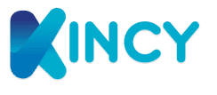

CI/CD for an infrastructure provider
Elinext improved release flow for an infrastructure management provider and helped reduce development time by forty percent.
Read the case
Prepared for Karim SaniSaw you are hiring for an alternant DSI and infrastructure project role. That is a good time to make cloud, security, MCO, and client handoff work more repeatable.
Your signal is not only a junior hire. It says Kincy is adding project control around client infrastructure work. That is hard when managed services, cloud, security, and MCO must move together. Your site names DSI consulting, infrastructure projects, and support as core offers. The gap is senior architecture capacity behind the new coordinator. Without that layer, projects can move, but standards and reusable runbooks lag.
Your careers page lists the DSI project role beside systems and network roles. Pair each role with a written playbook for audits, migration choices, risk gates, and client handoff.
Your service pages promise monitoring, MCO, cloud, security, and reporting. Turn that promise into reusable templates before more client projects land.
We would run a six-week dedicated squad under your DSI consultant or project lead. The team shape is small: one cloud/DevOps architect, one platform engineer, one QA automation engineer, and a part-time delivery lead.
Map two live infrastructure projects against security, backup, monitoring, and handoff needs, then mark the repeatable parts.
Build a reusable cloud and MCO blueprint for tickets, checks, reports, and recovery steps.
Automate the first delivery checks with CI, test scripts, and simple evidence packs for each client.
Hand the playbook to Kincy's DSI team with weekly demos and clear ownership rules.
Elinext is a full-cycle software development company serving global clients across many markets since 1997. We have about 700 in-house specialists and use no freelancers or subcontractors on delivery. For Kincy, the useful part is senior cloud, backend, QA, DevOps, and test automation. We are ISO 9001 and ISO 27001 certified, which matters for client infrastructure work. Teams have delivered for Siemens, Broadcom, Volkswagen, TRUMPF, and TUI. The pilot above gives your DSI team more senior execution and reusable project assets.
Elinext improved release flow for an infrastructure management provider and helped reduce development time by forty percent.
Read the case
Elinext built real-time device checks and reporting to reduce risk inside IT infrastructure.
Read the case